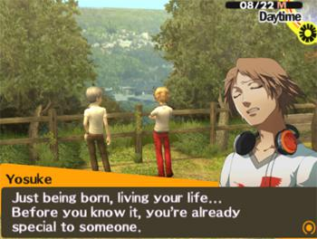

Reason#1: You Can't Speedrun Friendships

In Persona 4, you can max out your social links for an hour or less:
- The NPC will treat you as a part of their family
- The NPC will be more than happy to willingly sacrifice their life for your sake
- Overpowered abilities can be unlocked to help you sustain through every battle
- Someone whom you can spend holidays with
In Reality, however, it is not the same:
- Years are needed to form a sense of brotherhood
- Must acquire a legacy/lore together to unlock the "drinking from the same bottle" privilege
- Overpowered responsibilities to not ruin the friendship
- "OTW" which was sent to you 5 hours ago
Imagine if Persona 4’s logic is applicable in real life, I think there would be an increase
in our self-awareness stat. All “Should I ask them to hang out?” and “Is it ok to text them
important news?” would cease to seem like a desperate move. Unrealistic instant friendships
along with the noticeable increase in your stats truly are a NEET’s JRPG enjoyer’s dream.